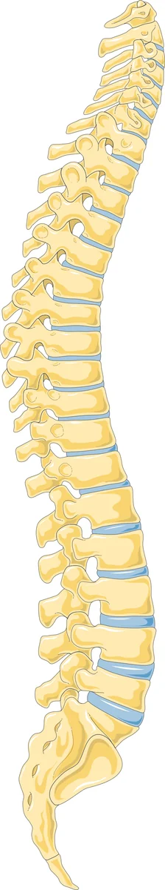

È un dolore che si sente nella parte bassa della schiena, nel gluteo o all'inguine, ma che nasce diversi livelli più in alto, nel punto in cui la colonna dorsale incontra quella lombare.
Lo scarto fra dove fa male e da dove viene è tutta la questione: spiega perché questa condizione resti spesso non riconosciuta, e perché la ricerca della causa vada estesa a un tratto di colonna più alto di quello dove si sente il dolore.[1]

Perché il dolore si sente lontano
Dai nervi che escono fra le ultime vertebre dorsali e le prime lombari partono rami che scendono verso il basso e attraversano la cresta iliaca, cioè il bordo osseo del bacino che si sente mettendo le mani sui fianchi. Questi rami portano sensibilità alla pelle della parte bassa della schiena, del gluteo e, per altre vie, della regione inguinale.
Quando il problema è a quel livello, il dolore compare dove arrivano i rami, non dove nasce. La descrizione classica distingue due situazioni:[1]
- una forma centrale, legata alle alterazioni delle piccole articolazioni posteriori della colonna alla giunzione dorso-lombare;
- una forma periferica, dovuta all'intrappolamento di un ramo del nervo cluneale superiore nel punto in cui attraversa la cresta iliaca.
Le due danno sintomi e segni clinici molto simili.[1]
Come si manifesta
- Dolore nella parte bassa della schiena, da un lato, spesso sopra la cresta iliaca.
- Può estendersi al gluteo e alla parte alta della coscia, e questo lo fa somigliare a una sciatica: per questa somiglianza si parla di pseudo-sciatica.[1]
- In alcune persone il dolore si sente all'inguine o nella parte bassa dell'addome.
- Un punto dolente preciso sulla cresta iliaca, qualche centimetro di lato rispetto alla linea mediana, che riproduce il dolore se premuto.
- La pelle della zona può risultare dolente e ispessita quando viene pizzicata e fatta rotolare fra le dita.
- Il dolore cambia con i movimenti del tratto dorso-lombare, non con quelli della parte bassa della schiena.
Il nome lungo che a volte si legge nei referti, «sindrome cellulo-teno-periosteo-mialgica», descrive proprio questo insieme di segni su pelle, tendini, periostio e muscoli.
Quando preoccuparsi
Vai al pronto soccorso, o chiama il 112, se compaiono
- difficoltà a trattenere o a svuotare urina o feci;
- perdita di sensibilità nella zona dei genitali, dell'ano o dell'interno coscia;
- perdita di forza a una o a entrambe le gambe, soprattutto se peggiora di ora in ora.
Contatta il medico presto se
- il dolore scende sotto il ginocchio con formicolio o debolezza;
- hai febbre, brividi o stai perdendo peso senza motivo;
- hai avuto un tumore in passato;
- il dolore è iniziato dopo un trauma, o è comparso in una persona con osteoporosi;
- il dolore notturno ti sveglia e non cambia qualunque posizione prendi.
Sono gli stessi segnali che valgono per tutti i dolori della schiena, e servono a riconoscere le poche situazioni che richiedono un percorso diverso.
Cosa puoi fare tu
Fai
- Continua a muoverti nei limiti che il dolore permette, come in ogni dolore della schiena.
- Indica al medico il punto esatto in cui fa male e dove si estende: in questa condizione la mappa del dolore è l'informazione che più aiuta.
- Nota se qualcosa lo scatena a livello dorso-lombare, più in alto di dove lo senti.
- Segui il programma di esercizio che ti viene indicato, con costanza.
- Per la terapia farmacologica chiedi al medico.
Non fare
- Non dare per scontato che un dolore al gluteo venga dalla parte bassa della schiena.
- Non restare fermo in attesa che passi.
- Non affrettarti a fare esami diagnostici senza aver chiesto il parere del tuo medico.
Servono esami?
Non esiste un'immagine che faccia questa diagnosi. La rassegna di riferimento è esplicita su quali siano gli elementi che contano: conoscere le cause meccaniche del dolore della schiena, conoscere l'anatomia della zona, un esame clinico specifico, e blocchi anestetici mirati eseguiti con guida radiologica.[1]
Il blocco anestetico ha qui un ruolo particolare: non è solo un trattamento, è il passaggio che conferma da dove viene il dolore. Gli esami radiologici servono soprattutto a escludere altre cause, ed è il medico specialista che valuta sulla base della visita se siano necessari.
Le cure, e quanto funzionano
Il messaggio della rassegna è incoraggiante e va riportato per intero: un trattamento esiste e, come in tutte le cause di dolore della schiena, è più efficace nelle fasi iniziali.[1]
Sul confronto fra le opzioni esiste un piccolo studio. Trenta persone con diagnosi definita sono state divise in tre gruppi da dieci: solo esercizio, solo infiltrazioni locali di corticosteroide, oppure entrambi.[2]
| Trattamento | Risultato |
|---|---|
| Esercizio | Miglioramento significativo di dolore e disabilità |
| Infiltrazioni locali | Miglioramento significativo di dolore e disabilità |
| Esercizio più infiltrazioni | Miglioramento significativo, e risultati migliori degli altri due sulla disabilità a uno e a tre mesi |
Tutti e tre i gruppi sono migliorati in modo statisticamente significativo su dolore e disabilità. I risultati migliori si sono avuti nel gruppo che ha ricevuto la combinazione di infiltrazione ed esercizio.[2]
Va detto con chiarezza quanto pesa questo studio: trenta persone in tutto, dieci per gruppo, con un'età media di circa ventitré anni. È un'indicazione, non una dimostrazione. Ma va nella stessa direzione di quanto si osserva in gran parte del dolore muscolo-scheletrico: l'infiltrazione apre una finestra, l'esercizio la rende duratura.
Per la terapia farmacologica chiedi al medico.
Quanto sono solide le prove
Questo è il punto da conoscere prima di tutto il resto. La rassegna più completa disponibile ha selezionato ventotto articoli su cinquantadue individuati inizialmente, e la maggior parte di questi è costituita da descrizioni di singoli casi, pubblicate su riviste di riabilitazione, chiropratica e medicina generale.[1]
Significa che la condizione è descritta e riconoscibile, che esiste un percorso diagnostico definito, ma che non ci sono studi ampi a confrontare i trattamenti. È il motivo per cui questa scheda contiene meno numeri delle altre, e per cui la diagnosi va posta con metodo anziché per esclusione affrettata.
Quando serve lo specialista
Qui più che altrove, per una ragione precisa: la diagnosi si fa con un esame clinico mirato alla giunzione dorso-lombare, che è una zona che non viene esaminata quando si cerca la causa di un dolore lombare basso.
La visita serve a riconoscere la mappa del dolore, a escludere le cause che partono dalla parte bassa della schiena, e a stabilire se un blocco anestetico mirato possa chiarire da dove nasce il problema.
E, una volta chiarito, a discutere, numeri alla mano, quale trattamento sia più idoneo per la tua situazione.
Da dove vengono queste informazioni
- Randhawa S, Garvin G, Roth M, Wozniak A, Miller T. Maigne syndrome: a potentially treatable yet underdiagnosed cause of low back pain. A review. J Back Musculoskelet Rehabil 2022;35(1):153–159. doi:10.3233/BMR-200297. Ventotto articoli selezionati, in larga parte descrizioni di singoli casi.
- Alptekin K, Örnek NI, Aydın T, Alkan M, Toprak M, Balcı LA, Öncü Alptekin J. Effectiveness of exercise and local steroid injections for the thoracolumbar junction syndrome (the Maigne's syndrome) treatment. Open Orthop J 2017;11:467–477. doi:10.2174/1874325001711010467. Trenta pazienti, tre gruppi da dieci.
La letteratura su questa condizione è costituita in larga parte da descrizioni di singoli casi. Lo studio al punto 2 comprende trenta pazienti in tutto, dieci per gruppo, con un'età media di circa ventitré anni: i risultati vanno letti come un'indicazione, non come un confronto conclusivo fra i trattamenti.
Scheda aggiornata il 9 novembre 2026. Prossima revisione prevista entro novembre 2028.